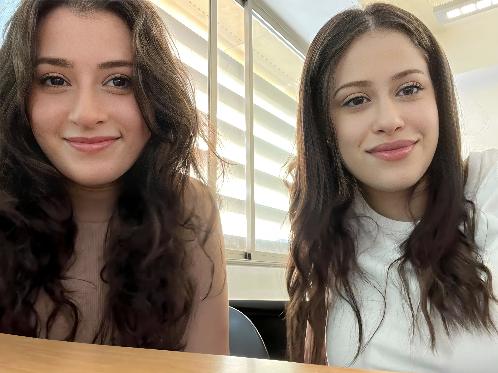
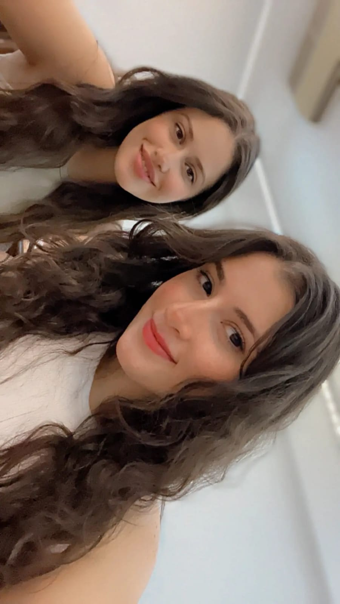

ABOUT
TAMARA

if you're feeling a little nosy
A little snippet of my story
In the intricate tapestry of my 20 years, I am a spirited individual hailing from the vibrant culture of Lebanon, where each day is a canvas waiting to be painted with innovation and possibility.
As a computer science enthusiast, my journey is intertwined with the captivating world of coding, where I find the sheer joy of creating something extraordinary out of mere lines of code.
Beyond the realms of algorithms and syntax, my heart pulsates with a fervent passion for fashion and design, adding an artistic flair to my technological pursuits.
In this mosaic of interests, my mission is clear: to carve a path that seamlessly blends creativity with coding, forging a unique narrative in the vast landscape of technology.
Each keystroke is a step toward not just success, but a journey where triumphs and failures are embraced alike, shaping a story of resilience and determination.
Join me in this exhilarating quest as I navigate through the intricate web of binary and design elements, driven by an unwavering commitment to transform my passion for coding into a successful journey marked by myriad achievements and boundless innovation.
Together, let's unravel the potential of the digital realm and infuse it with the spirit of creativity, creating a narrative of triumph and growth.
if you're feeling a little nosy
A little snippet of my story
Embarking on my coding journey in the vibrant landscape of Lebanon at the age of 20, I find solace and excitement in the realm of computer science, with a particular focus on networking.
Passionate about the intricate dance between coding and networking, each line of code becomes a canvas for innovation, and every network configuration is a strategic move in the digital chessboard.
.
Diving deep into the world of network protocols, security, and infrastructure, I explore the fascinating interplay of devices and connections.
Networking, to me, is not just about linking computers; it's about weaving a digital tapestry that facilitates seamless communication and collaboration. Join me on this odyssey, where the language of programming extends beyond code, embracing the intricate symphony of network architectures and the dynamic connections that bring the digital realm to life.
if you're feeling a little nosy
A little snippet of our story
In the vibrant tapestry of Lebanese friendships, Tamara and Christelle stand as inseparable threads woven together by shared ambitions and a deep love for coding.
Their journey, not just in the realm of computer science but in life, is a testament to the strength of their friendship.
Tamara, with her passion for creating and coding, found a kindred spirit in Christelle, a fellow computer science enthusiast. Late-night coding sessions turned into moments of shared laughter and triumph as they tackled complex algorithms and embraced the challenges of networking.
Their unique blend of skills, Tamara's artistic vision and creation with the passion of coding and Christelle's technical prowess, formed the foundation of their collaborative endeavors.
Beyond the lines of code, their friendship blossomed, fueled by encouragement and a shared commitment to success.
Together, they navigated the twists and turns of their academic and coding pursuits, celebrating not only achievements but also the growth that came with every challenge faced.
As friends, Tamara and Christelle exemplify the beauty of companionship on the journey of life, where shared passions create not just collaborators but lifelong confidantes.
Through the highs and lows, their friendship remains a beacon of support, proving that the bonds forged in the pursuit of common goals are the ones that endure.

